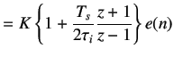
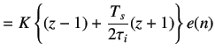
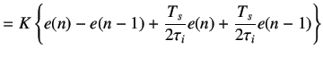
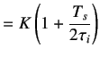
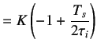

Next: Implementing locally Up: Controlling Single Board Heater Previous: Second Method
 |
(5.13) | |
|
On taking the Laplace transform,we obtain
| ||
 |
(5.14) | |
|
By mapping controller given in equation 5.14 to the discrete time domain using trapezoidal approximation
| ||
|  | (5.15) | |
|
On cross multiplying, we obtain
| ||
|  | (5.16) | |
|
We divide by
| ||
|  | (5.17) | |
|
The PI controller is usually written as
| ||
| (5.18) | ||
|
where
| ||
|  | (5.19) | |
|  | (5.20) | |